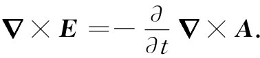
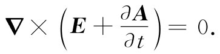
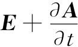
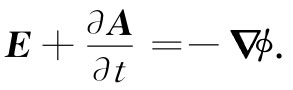
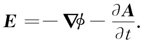
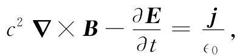
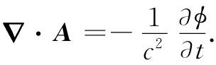
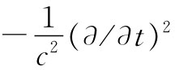
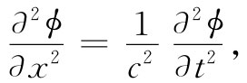

现在，我们愿意做些数学工作，要把麦克斯韦方程组写成比较简单的形式。你可能会认为我们正在使其复杂化，但倘若你稍微忍耐一点，它们就会突然显得简单。尽管目前你已完全熟悉了麦克斯韦方程组中的每个方程，但其中有许多部分必须全部综合起来。这就是我们所要做的。
现在从▽·B=0——最简单的方程——开始。我们知道，这意味着B是某种东西的旋度。所以，如果写成：
B=▽×A， （18.16）
则我们已解答了一个麦克斯韦方程（顺便提一下，你知道，若另一个矢量A′=A+▽ψ——其中ψ为任一标量场——则这个A′仍保持正确，因为▽ψ的旋度为零，所以B还是一样。对此我们早已有所论述）。
其次，考虑法拉第定律▽×E=-∂B/∂t，因为它并不涉及任何电流或电荷。如果将B写成▽×A并对t微分，则可把法拉第定律写成如下形式：

由于对时间或对空间取微商的先后次序是可以调换的，上式也可写成
 （18.17）
由此可见， 乃是一个旋度为零的矢量。因此，这一矢量便应当是某种东西的梯度。当我们处理静电学问题时，就有▽×E=0，于是断定，E本身就是某种东西的梯度，并假定为-ϕ（负号是为了技术上的方便）的梯度。现在对于E+∂A/∂t也同样处理，即令
 （18.18）
这里采用了同样的符号ϕ，以致在没有东西随时间变化的静电情况下，∂A/∂t项消失，E就是我们原来的-▽ϕ。因此，法拉第方程可以写成这种形式：
 （18.19）
我们已经解决了麦克斯韦方程组中的两个方程，而且我们已发现，为了描述电磁场E和B，总共需要四个势函数：一个标量势ϕ和一个矢量势A，后者当然就是三个函数。
现在那个A确定了B和E的一部分，那么当我们将A改成A′=A+▽ψ时，又会发生什么呢？一般说来，如果我们不采取某种特别预防措施的话，E是会改变的。然而，仍然可容许A按照上述方式改变而不影响E和B——也就是说，不改变其物理本质——如果我们总是按下列法则一同 改变A和ϕ，即
则不论B或由式（18.19）得到的E，就都不会改变。
以前，我们曾选取▽·A=0，以便使静态方程组稍微变得简单些。现在我们不准备再这样做了，打算做另一种选择。但在告诉大家这种选择到底是什么之前，我们将稍微等一下，因为以后就会明白为什么 要做这样一种选择。
现在回到余下的两个描写势与源（ρ和j）之间关系的麦克斯韦方程。一旦我们能够根据电流和电荷确定A和ϕ，就总可以从式（18.16）和（18.19）获得E和B，所以我们将有另一种形式的麦克斯韦方程组。
首先，将式（18.19）代入▽·E=ρ/∈0 中，我们便得：
这是ϕ和A与源相联系的一个方程。
最后的方程将是最复杂的一个方程。我们先把第四个麦克斯韦方程重新写成

然后利用式（18.16）和（18.19）以势代替E和B，得
再利用代数恒等式：▽×（▽×A）=▽（▽·A）-▽2 A，得到：
这不是很简单！
幸而我们现在可以利用任意选择A的散度的自由。下面将要做的就是利用这一选择以便使A和ϕ的方程互相分开而又具有相同形式。为此，选择可以按下式规定 [2] ：
 （18.23）
当我们这样做时，式（18.22）中关于A和ϕ的中间两项便互相抵消，因而该式也就比原来简单得多了：
而关于ϕ的方程——式（18.21）——取相同的形式：
多么漂亮的一组方程！它们之所以漂亮，首先是因为它们令人满意地互相分开了——电荷密度属于ϕ，电流则属于A。而且，尽管左边看来有点古怪——拉普拉斯算符加上一个 ——但当我们将其全都展开出来时看到
就x，y，z，t而言方程具有很好的对称性——这里-1/c2 是必要的，因为时间和空间当然彼此 不同，它们各有不同的单位。
麦克斯韦方程组已经把我们引导到关于势ϕ和A这样一类新型方程以及所有四个函数ϕ，Ax ，Ay 及Az 的相同的数学形式。一旦掌握了如何求解这些方程，便能够由▽×A和-▽ϕ-∂A/∂t获得B和E. 所以我们具有一套完全同麦克斯韦方程组等价的另一种形式的电磁学定律，而在许多场合下它们处理起来简单得多。
事实上，我们曾经解过一个与式（18.26）十分相似的方程。早在第1卷第47章中学习声学时，我们就有这种形式的方程：

并且知道，它描述了波在x方向以速率c进行的传播。方程式（18.26）是关于三维空间相应的波动方程。所以在不再存在任何电荷和电流的那些区域中，ϕ和A都等于零并不是 这些方程的解（虽然它们的确也是一种可能的解）。会有一些解，其中某组ϕ和A随时间变化，但却总是以速率c向外运动，那些场穿越自由空间向前传播，正如本章开头的例子那样。
借助方程Ⅳ中麦克斯韦的新项，我们就能用A和ϕ将场方程组写成一种简单的而又能立即使电磁波的存在成为明显的那种形式。对于许多实用的目的来说，利用E和B的原来那些方程将仍然很方便。但这都在我们已经攀登过的山峰的那一边。现在我们准备跨越山峰到另一边去了。事情看来将会不同——我们准备看到一些新的和美妙的景色。
[1] 噢！并不完全正确。如果它们到达一个有电荷存在的区域，便可能被“吸收”。这意味着其他的场可以在某处产生而在与这些场互相叠加时，通过相消干涉就可将其“抵消”掉（见第1卷第31章）。
[2] 这样选取▽·A称为“选取一个规范”。通过加▽ψ来改变A的方法称为“规范变换”。式（18.23）称为“洛伦兹规范”。